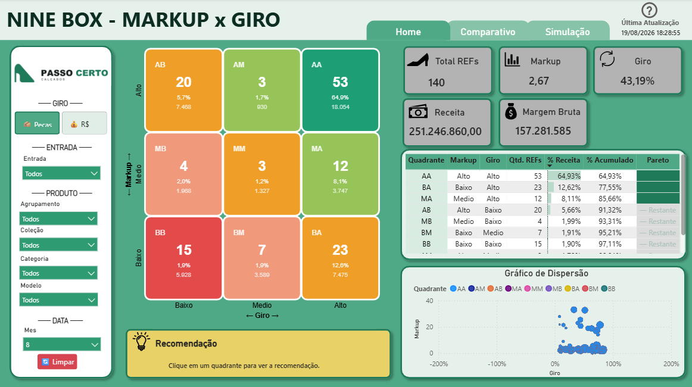

Matriz Nine Box — classificação de sortimento
Varejo · SortimentoMarkup × giro para decidir o que comprar, repor e liquidar.

- Problema
- Milhares de SKUs, verba de compra finita: onde investir e o que sair de linha?
- Dados
- Base de vendas + estoque (dados sintéticos de varejo), tratada em SQL e modelada em estrela.
- Indicadores
- Markup, giro, cobertura e a classificação 3×3 que posiciona cada produto.
- Decisão
- Sortimento e compra por categoria: reforçar as estrelas, girar os parados.
- Power BI
- DAX
- SQL Server
- Modelo estrela